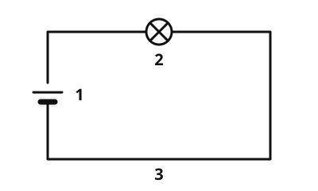
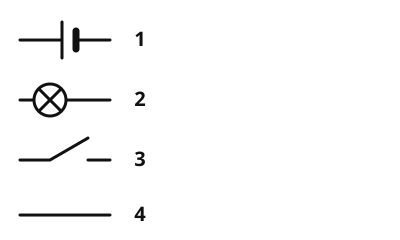
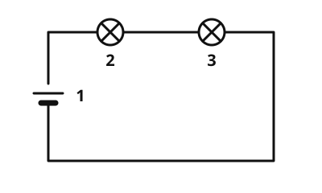
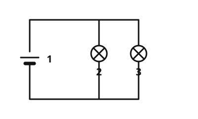
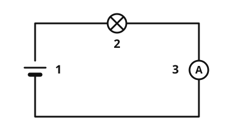
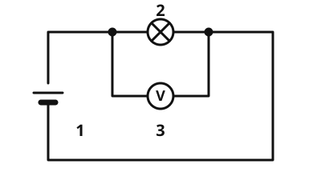
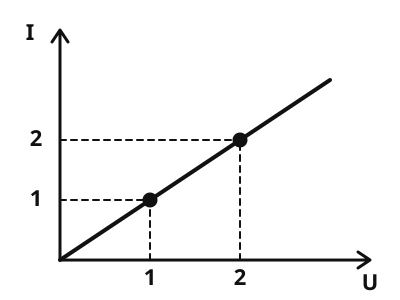
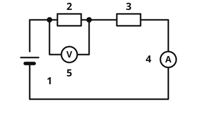
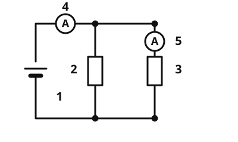

Medienübersicht
Alle Bilder, Audios und Videos dieser App mit ihrer Quelle und ihrer Lizenz.
Bilder

images/stromkreis.svgQuelle: https://github.com/lernapps/elektrizitaet. Lizenz: CC0-1.0.Verwendet auf: Der einfache Stromkreis

images/schaltzeichen.svgQuelle: https://github.com/lernapps/elektrizitaet. Lizenz: CC0-1.0.Verwendet auf: Schalter und Schaltzeichen

images/reihenschaltung.svgQuelle: https://github.com/lernapps/elektrizitaet. Lizenz: CC0-1.0.Verwendet auf: Reihenschaltung

images/parallelschaltung.svgQuelle: https://github.com/lernapps/elektrizitaet. Lizenz: CC0-1.0.Verwendet auf: Parallelschaltung

images/amperemeter.svgQuelle: https://github.com/lernapps/elektrizitaet. Lizenz: CC0-1.0.Verwendet auf: Die Stromstärke

images/voltmeter.svgQuelle: https://github.com/lernapps/elektrizitaet. Lizenz: CC0-1.0.Verwendet auf: Die Spannung

images/kennlinie.svgQuelle: https://github.com/lernapps/elektrizitaet. Lizenz: CC0-1.0.Verwendet auf: Das ohmsche Gesetz

images/reihe-messen.svgQuelle: https://github.com/lernapps/elektrizitaet. Lizenz: CC0-1.0.Verwendet auf: Reihenschaltung mit Messgeräten

images/parallel-messen.svgQuelle: https://github.com/lernapps/elektrizitaet. Lizenz: CC0-1.0.Verwendet auf: Parallelschaltung mit Messgeräten